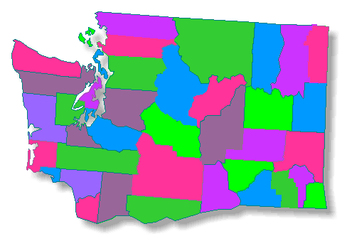

Engineer List
The Logo
Collection
County Email
Directory
23039
|
This is Washington State

Adams | Asotin |
Benton | Chelan |
Clallam | Clark |
Columbia | Cowlitz |
Douglas | Ferry
Franklin | Garfield |
Grant | Grays Harbor |
Island | Jefferson |
King | Kitsap |
Kittitas | Klickitat
Lewis | Lincoln |
Mason | Okanogan |
Pacific | Pend Oreille |
Pierce | San Juan |
Skagit | Skamania
Snohomish | Spokane |
Stevens | Thurston |
Wahkiakum | Walla Walla |
Whatcom | Whitman |
Yakima
|